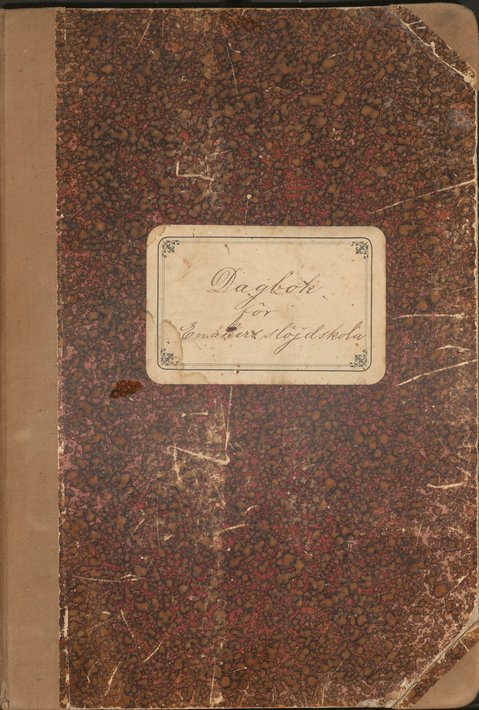

Om projektet
Detta projekt är utfört i samband med Enåkers hembygdsförening av Alexandra Berghwall och Joana Ribeiro, studenter på delkursen “Digitalisering för bevarande och tillgänglighet” på Masterprogrammet i Biblioteks-och informationsvetenskap vid Högskolan i Borås under vårterminen 2026. Projektet är en digitalisering av en dagbok från Enåkers slöjdskola, Enåker socken, Heby kommun från år 1900-1908 men är i nuläget begränsat till de första tre åren (1900-1902) på grund av tidsbegränsningar. I dagboken loggades information om skolans eleverna, deras närvaro, samt information om vilka projekt eleverna tillverkade. Eleverna är identifierade med nummer och namn, samt hemort och vårdvanare. Projekten tillverkade av varje student är identifierade och till stort sätt daterade och betygsatt. framtiden, planerar vi att digitalisera dagboken i sin helhet. Hela boken var digitaliserad och transkriberad och transkriberingen var utförd vid hand för bokens helhet.
Om skolan
Enåkers skola började i samband med folkskolans reformer 1844 som en ambulerande folkskola mellan lokaler i närliggande Kroksbo, Pålsbo och Ekedal tills det blev koncentrerat fem år senare till två lokaler i Ekedal och i byns Sockenstugan. En fast folkskola byggdes vid Enåkers kyrka mellan 1872-76 och fick namnet Kyrkskolan. Ett större skolhus byggdes år 1914 och hade plats för 50 elever på folkskolan och 36 vid småskolan vid årskurs 1-6. Skolan fortsätter att ha blandade årskurser i samma undervisningslokal ännu fram till 2001. Kommunal undervisning och ansvar för skolan slutades år 2009 och en lokal ekonomisk förening tog över ansvaret för skolan som en fristående föräldrakooperativ skola tills den stängdes vårterminen 2011 på grund av elevbrist. (Informationen från O. Nilson, Möt Enåker. En uppländsk socken nära Västmanland, 2018).
Om slöjdundervisning
Slöjdundervisning har varit ett ämne i svenska skolor sedan 1700-talet där handarbeten var en del av studier vid kristendom och läsning, men det kan ha varit en del av skoldagar sedan 1500-talet men det uteblev som ett ämne när folkskolan stadgas 1842. Slöjd ingick först som ett skolämne när den första läroplanen kom år 1878 men det var ej obligatoriskt och det var barnens vårdnadshavare som bestämde sig om deras barn skulle delta. Fem år senare blev slöjd ett ämne vid folkskoleseminarier vilket betydde att lärarna ska nu lära sig om hur man undervisar i ämnet. Under tiden där Enåkers slöjdskolans dagbok uppstår fanns det en strikt uppdelning mellan flickor och pojkar och deras inriktningar inom ämnet, nämligen att flickor ska lära sig om sömnad och stickning medan pojkarna ska fokusera på trä-och metallslöjd. Det här är tydligt i vår dagbok och det är endast pojkarnas arbete och närvaro som är rapporterade. Föremålen som pojkarna skapade är tidstypiskt och skulle ha haft praktiskt användning på ett landsbygd samhälle, till exempel en selpinne som används till häst, en skottkärra, en skaft till en flughåv för att kunna fånga flugor och olika sorter av vinklar. (Information från https://lararstiftelsen.se/slojd-ett-foranderligt-amne/)
Tack
Ett särskilt tack till Britt Marie Blidmo Hedlund för hennes kunskap om Enåkers historia.Projekt gjorde av:
Alex Bergwhall; Joana P.C. Ribeiro
Transkriberade av:
Alex Berghwall; Joana P.C. Ribeiro